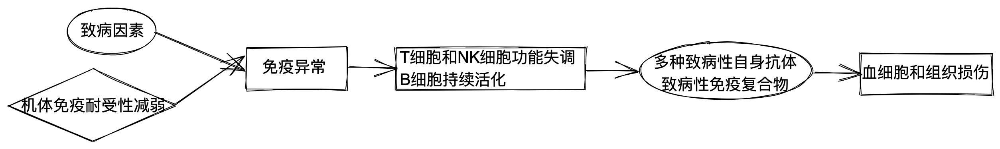
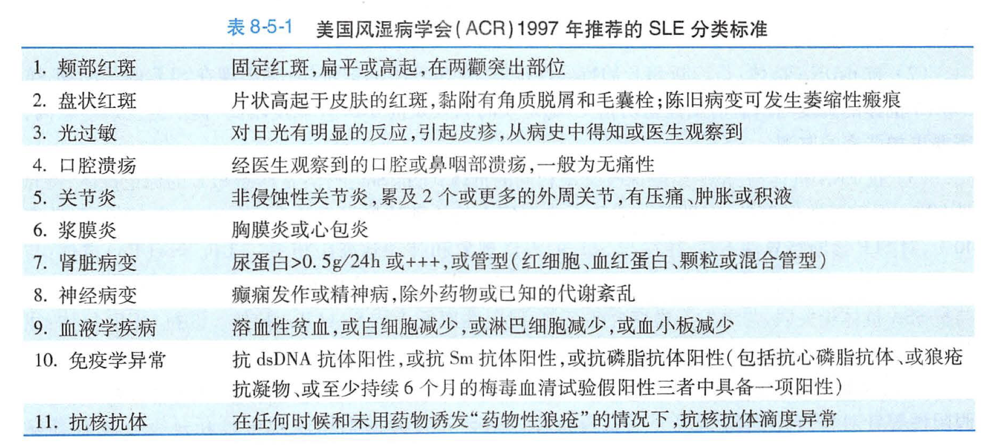

8.5.系统性红斑狼疮
- 1.
系统性红斑狼疮（SLE）：是一种以致病性自身抗体和免疫复合物形成并介导器官、组织损伤的自身免疫病，临床上常存在多系统受累表现，血清中存在以抗核抗体为代表的多种自身抗体。以病情缓解和急性发作交替为特点。
- 2.
病因
-
遗传
-
环境因素
-
阳光（紫外线）
-
药物、化学试剂
-
微生物病原体
-
-
雌激素：以女性多见，尤其是 20～40 岁的育龄期女性
-
- 3.
发病机制

- 4.
病理：主要病理改变为炎症反应和血管异常（血管炎）
-
中小血管因 IC 沉积或抗体直接侵袭而出现管壁的炎症和坏死
-
受损器官的特征性改变
-
苏木紫小体
-
“洋葱皮样”病变
-
-
- 5.
临床表现
- 1.
全身表现：发热、疲倦、体重下降
- 2.
皮肤与黏膜表现
-
鼻梁和双颧颊部呈蝶形分布的红斑（最具特征性）
-
盘状红斑
-
指掌部或甲周红斑
-
其他
-
光过敏(photosensitivity)
-
网状青斑（livedo reticularis）
-
口腔无痛性溃疡(oral ulcers)
-
脱发（alopecia）
-
雷诺现象(raynaud's phenomenon)
-
-
- 3.
浆膜炎：胸腔积液、心包积液
- 4.
肌肉关节表现：关节痛最常见（对称性多关节疼痛、肿）
- 5.
肾脏表现：多有狼疮肾炎（LN)的表现--蛋白尿、血尿、管型尿、水肿、高血压、肾衰竭
- 6.
心血管表现：常出现心包炎
- 7.
肺部表现：
-
狼疮性肺炎
-
肺间质性病变：活动后气促、干咳、低氧血症
-
肺动脉高压：进行性加重的干咳和活动后气短
-
- 8.
神经系统表现：神经精神狼疮（NP-SLE）--提示 SLE 病情活动
-
中枢病变：癫痫、狼疮性头痛
-
外周病变：吉兰-巴雷综合征
-
- 9.
消化系统表现：与肠壁和肠系膜的血管炎有关，表现为食欲不振、腹痛、呕吐、腹泻、腹水；血清转氨酶升高
- 10.
血液系统表现：血红蛋白下降、白细胞、血小板减少常见
- 11.
眼部表现：与视网膜血管炎有关，表现为视网膜出血、视网膜渗出、视盘水肿
- 12.
抗磷脂综合征（APS）：可以出现在 SLE 的活动期，其临床表现为 ① 动脉和(或)静脉血栓形成 ② 反复的自发流产 ③ 血小板减少，病人血清不止一次出现抗磷脂抗体。
- 13.
干燥综合征（SS）：主要累及外分泌腺体的慢性自身免疫性炎症，表现为口、眼干燥，腮腺肿大
- 1.
- 6.
相关检查
- 1.
- 2.
自身抗体检查
- 3.
补体：补体低下，尤其是 C3 低下常提示有 SLE 活动
- 4.
肾活检病理：对狼疮肾炎的诊断、治疗和预后估计均有价值
- 5.
X 线及影像学检查：有助于早期发现器官损害
- 7.
诊断
符合 4 项或 4 项以上者，在除外感染、肿瘤和其他结缔组织病后，可诊断为 SLE

活动性评估：常用 SLE 疾病活动指数（SLEDAI）
- 8.
治疗：
治疗原则：疾病活动且病情重的患者，予强有力的药物控制，病情缓解后，则接受维持性治疗
- 1.
一般治疗
-
心理治疗
-
急性活动期卧床休息，慢性病人注意勿过劳
-
及早发现和治疗感染;
-
避免使用可能诱发狼疮的药物（避孕药），避免强阳光暴晒和紫外线照射
-
缓解期才可作防疫注射，但尽可能不用活疫苗
-
- 2.
对症治疗
-
发热及关节痛--非甾体抗炎药
-
高血压、血脂异常、糖尿病、骨质疏松--相应治疗
-
SLE 神经精神症状--降颅压、抗癫痫、抗抑郁
-
- 3.
药物治疗
- 1.
糖皮质激素（CG）：狼疮危象者应进行激素冲击治疗，即甲泼尼龙 500～1000mg，静脉滴注每天 1 次，连用 3～5 天为 1 疗程
- 2.
免疫仰制剂：联合用药减少复发，以及减少长期激素的需要量和副作用；在有重要脏器受累的 SLE 病人中，诱导缓解期建议首选 CTX 或 MMF 治疗
- 3.
大剂量免疫球蛋白（IVIG）： 静脉注射适用于某些病情严重而体质极度衰弱者或（和）并发严重感染者
- 4.
合并
抗磷脂综合征 的治疗：应用阿司匹林或华法林抗血小板、抗凝治疗
- 1.
- 1.